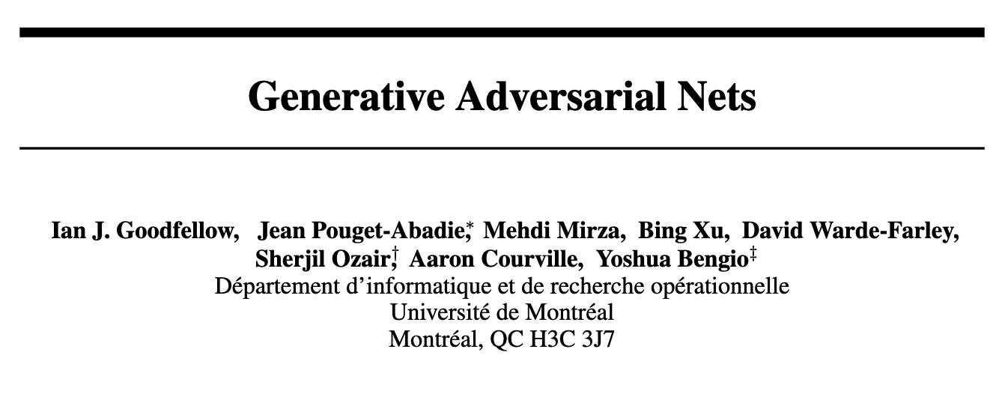
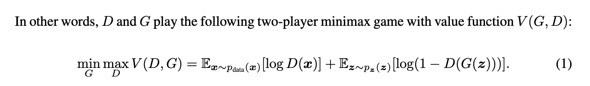
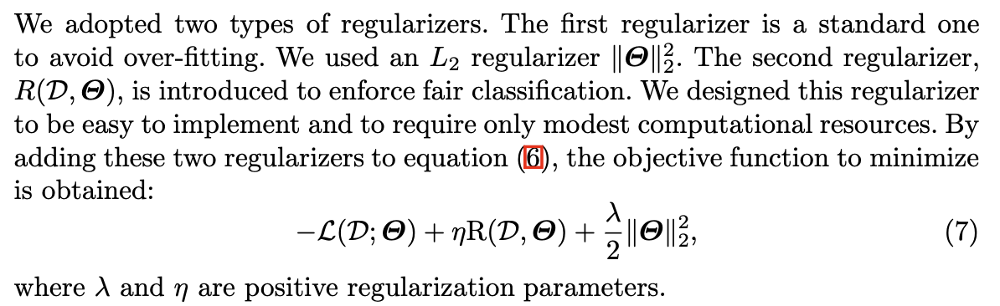
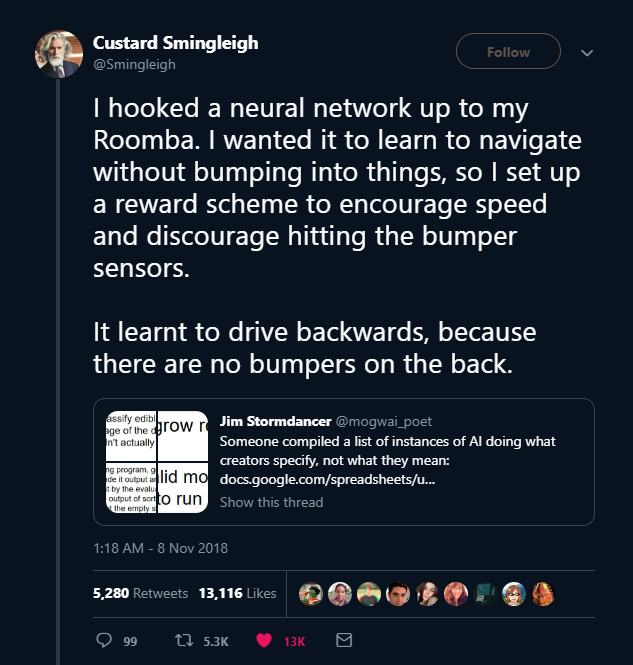

Proposing Threshold Concepts in Machine Learning
ITiCSE 2026 · Madrid
University of Toronto Mississauga
Delft University of Technology
Delft University of Technology
Who We Are

Lisa Zhang
University of Toronto Mississauga
- Associate Professor, Teaching
- MSc in ML (Toronto, Vector)
- Teaching ML since 2018: intro ML, deep learning, applied AI, AI safety
- ML/CS Education research
- EAAI co-chair 2026/2027; TOCE AE

Gosia Migut
Delft University of Technology
- Assistant Professor
- PhD in explainable ML (UvA)
- Teaching ML since 2012
- Hosts TU Delft ML Teacher Community
- ML Education Research; CS Education Research
Jesse Krijthe
Delft University of Technology
- Assistant Professor
- PhD in ML (Leiden)
- Teaching: Intro ML BSc (6×), Advanced ML MSc (6×), 50+ student projects
- Research: ML methodology & theory, causal inference, healthcare
28 years of combined ML teaching · North America + Europe
undergrad and graduate · educator and researcher
Threshold Concepts
“…akin to a portal, opening up a new and previously inaccessible way of thinking about something. It represents a transformed way of understanding, or interpreting, or viewing something without which the learner cannot progress.” — (Meyer and Land 2003)
Transformative fundamentally shifts the learner’s perspective
Troublesome difficult to grasp; conflict with prior understanding
Integrative unifies disparate concepts in a domain
Irreversible once understood, unlikely to be unlearned
Bounded limited to specific disciplinary boundaries
Examples of Threshold Concepts
Concept granularity: ours will be broad, field-level ideas
…like the AI4K12 “five big ideas” (Touretzky et al. 2019)
Our Process
Threshold concepts are usually identified through consensus (Barradell 2013; Timmermans and Meyer 2019)
Our approach:
1. Brainstorm Independent brainstorming from our teaching + research experience
2. Discuss Several rounds of discussion on these candidate concepts
3. Ground Ground the arguments in prior work in ML research, ML education & ML/AI misconceptions
Whether TCs can be identified with empirical rigor at all is contested (Rowbottom 2007; Rountree and Rountree 2009)
What we brainstormed
perfect
…and how we grouped them
perfect
…and how we grouped them
perfect
Five proposed threshold concepts
1 · Learning is Optimization
Learning is Optimization
To describe an ML method, we describe:
- search space (model class)
- loss function
- optimization algorithm
Supervised Learning: minimize empirical risk
\[ \min_{f \in \mathcal{F}} \; \frac{1}{n}\sum_{i=1}^{n} \ell\big(f(x_i),\, y_i\big) \]
Reinforcement Learning: maximize expected discounted return
\[ \max_{\pi} \; \mathbb{E}_{\tau \sim \pi}\Big[\textstyle\sum_{t=0}^{T} \gamma^t r_t\Big] \]
Learning is Optimization: Troublesome
Counters novices’ beliefs that:
🧠
ML works similarly to the human brain (Marx et al. 2024)
⚙️
ML behaviour is programmed rather than learned (Marx et al. 2024)
💾
Training data is stored inside the model (Bewersdorff et al. 2023)
Learning is Optimization: Transformative
This shift lets researchers construct and communicate ML methods by specifying the optimization problem.

⋮
Learning is Optimization: Transformative
 ⋮
⋮

Learning is Optimization: Integrative
Unsupervised learning: k-means clustering
Block coordinate descent on \(J = \sum_{i=1}^{n} \lVert x_i - \mu_{c(i)} \rVert^2\)
Systematic reasoning: “What is this process implicitly optimizing?”
Learning is Optimization: Integrative
AI alignment: does the system do what its designers intended, not just what the objective literally rewards?

Goodhart’s Law: “When a measure becomes a target, it ceases to be a good measure”
- hallucination in LLMs (optimizing for next-token prediction),
- sycophancy in LLMs (RLHF)
3 · Machine Learning is an Empirical Science
Machine Learning is an Empirical Science
“Empirical”: grounded in observation and experimentation
Machine Learning is an Empirical Science: Transformative
🔍
“Best algorithm”
→
Machine Learning is an Empirical Science: Transformative
🎯
“Accuracy”
→
Machine Learning is an Empirical Science: Troublesome
😭
Theory alone isn’t enough Accepting that theory can’t determine the “best” model is unsatisfying
🧪
Good evaluation is a skill Not always taught explicitly; reproducibility is a field-wide concern
Machine Learning is an Empirical Science: Integrative
One lens for many failure modes:
⚖️
Overfitting & underfitting
🎛️
Lack of hyperparameter exploration
🗂️
Bias in training data
💧
Data leakage
4 · ML Describes Geometric Processes
ML Describes Geometric Processes: Transformative
“Natural images lie on a manifold within \(\mathbb{R}^D\)”
“The earlier layers of a Multi-Layer Perceptron learn features, and the final layer is a linear classifier on these features”
Data as geometric objects Points in \(\mathbb{R}^D\) with meaningful distances, symmetries, invariances
Models as geometric processes that distorts this space
Models as geometric objects …with meaningful distances, symmetries, invariances
Optimizers as geometric processes navigating this space
ML Describes Geometric Processes: Troublesome
🌀
Connecting Algebraic and Geometric Views Students struggle connecting algebraic and geometric views (Sibia et al. 2025)
📚
Counters prior CS training Earlier courses emphasize data type (chars, pixels, waveforms) and time/space complexity.
ML Describes Geometric Processes: Integrative
🔢
Data geometry Shapes what can be learned: why one-hot encode categorical variables? distributed representation?
🕸️
Model geometry Shapes what models are possible: CNNs & GNNs exploit symmetries; embeddings & transfer learning
🏔️
Loss geometry Shapes how we find good models: gradient descent + momentum, step sizes, clipping, ravines
Implications & Discussion
How Threshold Concepts Are Used
🔄
Transformative concepts Rather than exhaustive topic coverage
⏳
Liminal time Build in time to work through liminal phases
✅
Real assessment Design assessments that reveal transformation, not mimicry
- New ML models are developed constantly
- Students report feeling overwhelmed (Sibia et al. 2025)
Implications: New Courses & Curricula
Not every course needs every concept, with equal weight
Decide the role (user, builder, researcher?), then the transformations we want the learners to undergo
Implications: Existing ML Courses
| Week | Lecture Topic |
|---|---|
| 1 | Supervised Learning; Nearest Neighbours |
| 2 | Decision Trees |
| 3 | Linear Regression |
| 4 | Feature Mapping; Classification |
| 5 | Multi-Class Classification; Multi-Layer Perceptrons |
| 6 | Neural Networks; Backpropagation |
| 7 | Bias-Variance Decomposition; Probabilistic Modeling |
| 8 | Algorithmic Fairness |
| 9 | Naive Bayes |
| 10 | Gaussian Discriminant Analysis |
| 11 | Clustering; Mixture Models; Expectation Maximization |
| 12 | Principal Component Analysis |
Revisit the TCs in every unit
- consistent thread empahsizing what is foundational and cross-cutting
- ensure the transformations actually happen
How much math do students need?
Math maturity is an important pre-liminal variation
Learners can cross the threshold with minimal math
Math self-efficacy remains a barrier; careful instruction can help, but transformations may not stick
What would you add, change, or challenge?
Thank you!
m.a.migut@tudelft.nl
j.h.krijthe@tudelft.nl